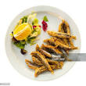

Kapenta Recipe

How to cook kapenta
There are many different ways youcan use to cook kapenta, so the choice will be yours.
All you need for the recipe is your spices, salt, oil and flour.
Ingredients
- 1 lb fresh kapenta
- Salt and pepper
- 1/2 cup All-purpose flour
- 1 cup canola oil
Steps
- Preheat oil in a large skillet to 350f.
- Dab dry rhe fresh kapenta.
- Season with salt and pepper. Coat with flour.
- Fry for about 4 minutes until crisp.
- Serve warm with sweet and sauce